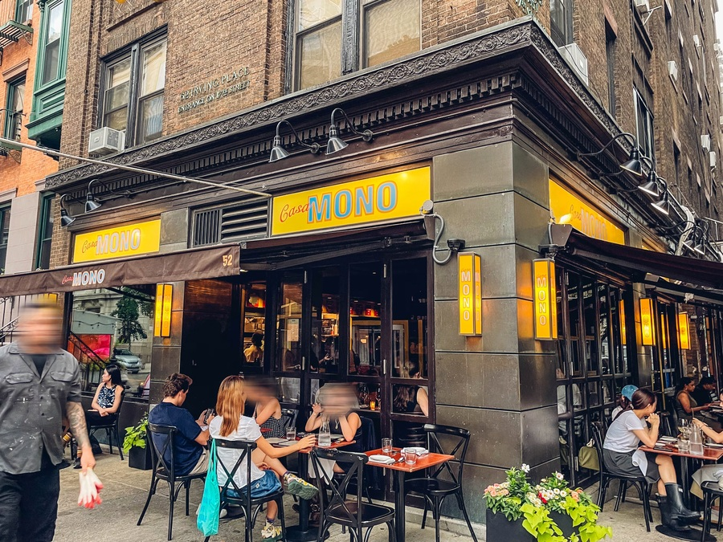

The Flatiron District sits in downtown Manhattan between 20th and 26th Streets, close to both Union Square and Midtown. The neighborhood takes its name from the Flatiron Building, a triangular structure completed in 1902 at the intersection of Fifth Avenue and Broadway. Madison Square Park sits on the northern end of the district. The area is primarily commercial and the dining options lean toward sit-down meals over quick stops.
Casa Mono
Casa Mono is a Spanish tapas restaurant on Irving Place near Union Square that has held a Michelin star since 2009. It takes reservations and seats around 13 tables. The menu focuses on Spanish coastal cooking with a range of small plates. It suits a longer meal where the goal is to stay in one place and eat across several courses.
The menu is built around small plates and covers a wide range of Spanish coastal cooking. Standout dishes include razor clams cooked on a plancha, oxtail-stuffed piquillo peppers, skirt steak with romesco, and octopus with fennel and grapefruit. Sitting at the bar directly in front of the grill gives a view of the plancha cooking. The wine list covers nearly 600 Spanish wines and has been recognized by Wine Enthusiast and Wine Spectator.
Casa Mono takes reservations and is open daily from noon to midnight. The bar next door, Bar Jamón, is a walk-in only Iberico ham and wine bar that shares the same wine list.

Source: The Infatuation